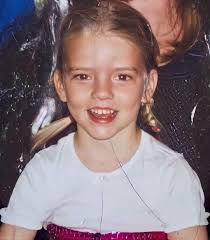
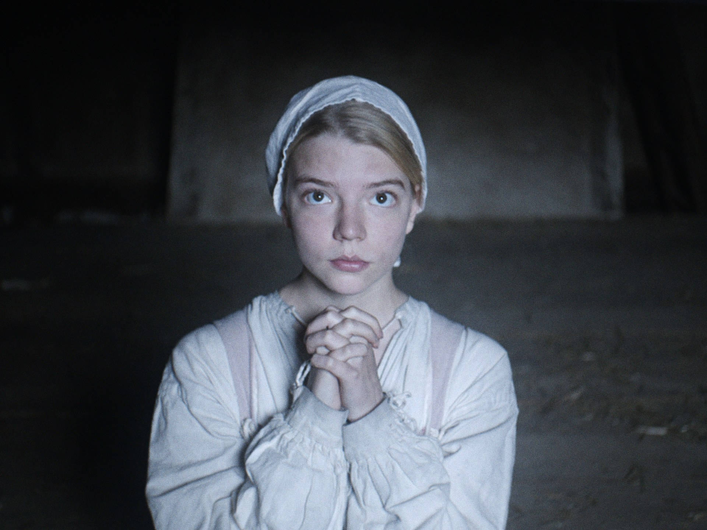

基本資訊
姓名： 安雅·泰勒-喬伊 (Anya Taylor-Joy)
出生日期： 1996 年 4 月 16 日
出生地： 美國佛羅裡達州邁阿密
職業： 女演員、模特

演藝生涯
1996 - 童年與成長
安雅出生於美國佛羅裡達州邁阿密，擁有阿根廷與英國血統。童年時移居阿根廷，六歲時搬到倫敦。

2015 - 影壇初登場
主演恐怖電影《The Witch》（《女巫》），獲得廣泛好評，並因此奠定影壇地位。

2016 - 突破與獎項
主演科幻恐怖片《摩根》與心理驚悚片《分裂》（Split），獲得 2016 年哥譚獨立電影獎最佳突破男主角獎。
2017 - 獲得BAFTA新星獎提名
因出色演技獲得英國影藝學院電影獎（BAFTA）新星獎提名。
2020 - 《后翼棄兵》全球爆紅
主演 Netflix 影集《The Queen’s Gambit》（后翼棄兵），飾演天才西洋棋手 Beth Harmon，獲得金球獎。

2024 - 主演《The Gorge》
兩名訓練有素的特工被派去保護神秘峽谷的兩側，兩人的關係變得親密起來。當邪惡出現時，他們必須共同努力才能生存下來。